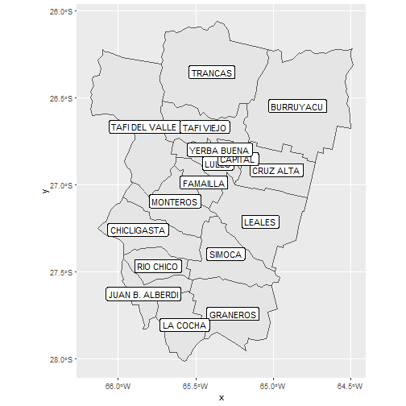
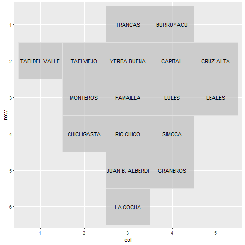

library(geoAr) # Argentina's Spatial Data Toolbox, [github::PoliticaArgentina/geoAr] v0.0.1.2
library(geofacet) # 'ggplot2' Faceting Utilities for Geographical Data, CRAN v0.2.0
#> The legacy packages maptools, rgdal, and rgeos, underpinning the sp package,
#> which was just loaded, will retire in October 2023.
#> Please refer to R-spatial evolution reports for details, especially
#> https://r-spatial.org/r/2023/05/15/evolution4.html.
#> It may be desirable to make the sf package available;
#> package maintainers should consider adding sf to Suggests:.
#> The sp package is now running under evolution status 2
#> (status 2 uses the sf package in place of rgdal)geoAr está pensado para facilitar el acceso a datos y
el trabajo con información geográfica de argentina. Una de las
posibilidades es la descarga de capas ge geometrías con el objetivo de
visualizar información. Una alternativa típica es utilizar
sf para trabajar con datos de este tipo y combinarlo con
ggplot2 (y su función geom_sf() para
visualizar capas geográficas.)
tucuman <- get_geo(geo = "TUCUMAN")
(tucuman_names <- tucuman %>%
add_geo_codes()) # Augment data with metadata as districts names or alternative id codes
#> Simple feature collection with 17 features and 8 fields
#> Geometry type: MULTIPOLYGON
#> Dimension: XY
#> Bounding box: xmin: -66.18101 ymin: -28.01575 xmax: -64.48315 ymax: -26.06037
#> Geodetic CRS: WGS 84
#> # A tibble: 17 × 9
#> codprov_censo coddepto_censo codprov coddepto nomdepto_censo name_prov codprov_iso
#> <chr> <chr> <chr> <chr> <chr> <chr> <chr>
#> 1 90 007 23 013 BURRUYACU TUCUMAN AR-T
#> 2 90 014 23 012 CRUZ ALTA TUCUMAN AR-T
#> 3 90 021 23 005 CHICLIGASTA TUCUMAN AR-T
#> 4 90 028 23 003 FAMAILLA TUCUMAN AR-T
#> 5 90 035 23 009 GRANEROS TUCUMAN AR-T
#> 6 90 042 23 007 JUAN B. ALBERDI TUCUMAN AR-T
#> 7 90 049 23 008 LA COCHA TUCUMAN AR-T
#> 8 90 056 23 011 LEALES TUCUMAN AR-T
#> 9 90 063 23 002 LULES TUCUMAN AR-T
#> 10 90 070 23 004 MONTEROS TUCUMAN AR-T
#> 11 90 077 23 006 RIO CHICO TUCUMAN AR-T
#> 12 90 084 23 001 CAPITAL TUCUMAN AR-T
#> 13 90 091 23 010 SIMOCA TUCUMAN AR-T
#> 14 90 098 23 017 TAFI DEL VALLE TUCUMAN AR-T
#> 15 90 105 23 016 TAFI VIEJO TUCUMAN AR-T
#> 16 90 112 23 014 TRANCAS TUCUMAN AR-T
#> 17 90 119 23 015 YERBA BUENA TUCUMAN AR-T
#> # ℹ 2 more variables: name_iso <chr>, geometry <MULTIPOLYGON [°]>
# MAPING
ggplot2::ggplot(data = tucuman_names) +
ggplot2::geom_sf() +
ggplot2::geom_sf_label(ggplot2::aes(label = nomdepto_censo))
#> Warning in st_point_on_surface.sfc(sf::st_zm(x)): st_point_on_surface may not give
#> correct results for longitude/latitude data
No obstante, existen ocaciones en las que la visualización de información geográfica a través de mapas convencionales puede no ser la mejor opción. geofacet es un paquete que busca sacar provecho de la potencia de ggplot2 y utilizar el facetado de un modo que cada caja de una grilla represente una entidad y que la suma de estas guarden relación con su distribución espacial.
Ejemplo
En los gráficos que siguen se representa un indicador tipico de la Ciencia Política (el Número Efectivo de Partidos) para una serie de tiempo para todas las provincias de Argentina. En el primer caso esto está facilitado al generar un facet a partir de la variable PROVINCIA, generando un pequeño gráfico para cada distrito (small multiple).

En el segundo se utiliza geofacet para acomodar esta grilla cómo si fuera un mapa de Argentina. Facilitando de este modo una mirada que tenga en cuenta (y conocimiento) de la distribución geográfica de las provincias.

“El paquete geofacet amplía ggplot2 de una manera que facilita la creación de visualizaciones geográficamente facetadas en R. Para usar geofacet se toman datos que representan diferentes entidades geográficas y se aplica un método de visualización para cada entidad. El conjunto resultante de visualizaciones conforma una cuadrícula que imita la topología geográfica original”.
(Traducción propia de la nota intorudctoria del autor, Ryan Haffen. Fuente: https://tuqmano.ar/posts/Geofacetear.html)
Los siguientes puntos resumen las ventajas potenciales para el uso de esta herramientas en comparación de otras técnicas para representar información a través de mapas u otras alterantivas (como cartogramas, tilemaps, etc.):
se pueden graficar múltiples variables para cada unidad geográfica
se pueden aplicar otros esquemas de codificación visual más allá del color
cada unidad geográfica tiene asignada la misma proporción espacial
Una particularidad del paquete geofacet es que
propicia el desarrollo de grillas por parte de usuaries. Tanto para uso
ad hoc como para contribuir con un repositorio
de grillas que alimenta el paquete. Esta iniciativa nos impulsó a
desarrollar grillas para Argentina y todas sus provincias, que
terminaron conformando {geofacetAR}, antecedente de este
proyecto que tuvo sus primeros pasos en el marco del 1° LatinR
en el que presentamos Geofaceting Argentina
Abstract | 📊 Slides | 📦 {geofaceteAR} | ⌨️ blogpost.
get_grid()
Así como get_geo() permite descargar un set de datos que
incluyen una variable geometry con información geográfica
para la generación de mapas, get_grid() permite descargar
grillas pre diseñadas para Argentina y cada una de las provincias.
(tucuman_names <- tucuman %>%
add_geo_codes()) # Augment data with metadata as districts names or alternative id codes
#> Simple feature collection with 17 features and 8 fields
#> Geometry type: MULTIPOLYGON
#> Dimension: XY
#> Bounding box: xmin: -66.18101 ymin: -28.01575 xmax: -64.48315 ymax: -26.06037
#> Geodetic CRS: WGS 84
#> # A tibble: 17 × 9
#> codprov_censo coddepto_censo codprov coddepto nomdepto_censo name_prov codprov_iso
#> <chr> <chr> <chr> <chr> <chr> <chr> <chr>
#> 1 90 007 23 013 BURRUYACU TUCUMAN AR-T
#> 2 90 014 23 012 CRUZ ALTA TUCUMAN AR-T
#> 3 90 021 23 005 CHICLIGASTA TUCUMAN AR-T
#> 4 90 028 23 003 FAMAILLA TUCUMAN AR-T
#> 5 90 035 23 009 GRANEROS TUCUMAN AR-T
#> 6 90 042 23 007 JUAN B. ALBERDI TUCUMAN AR-T
#> 7 90 049 23 008 LA COCHA TUCUMAN AR-T
#> 8 90 056 23 011 LEALES TUCUMAN AR-T
#> 9 90 063 23 002 LULES TUCUMAN AR-T
#> 10 90 070 23 004 MONTEROS TUCUMAN AR-T
#> 11 90 077 23 006 RIO CHICO TUCUMAN AR-T
#> 12 90 084 23 001 CAPITAL TUCUMAN AR-T
#> 13 90 091 23 010 SIMOCA TUCUMAN AR-T
#> 14 90 098 23 017 TAFI DEL VALLE TUCUMAN AR-T
#> 15 90 105 23 016 TAFI VIEJO TUCUMAN AR-T
#> 16 90 112 23 014 TRANCAS TUCUMAN AR-T
#> 17 90 119 23 015 YERBA BUENA TUCUMAN AR-T
#> # ℹ 2 more variables: name_iso <chr>, geometry <MULTIPOLYGON [°]>
# GRIDS AS IF THEY WHERE MAPS FOR {geofacet}
(grid_tucuman <- get_grid("TUCUMAN"))
#> Adding missing grouping variables: `name_provincia`
#> name_provincia name row col code
#> 1 TUCUMAN BURRUYACU 1 4 013
#> 2 TUCUMAN CAPITAL 2 4 001
#> 3 TUCUMAN CHICLIGASTA 4 2 005
#> 4 TUCUMAN CRUZ ALTA 2 5 012
#> 5 TUCUMAN FAMAILLA 3 3 003
#> 6 TUCUMAN GRANEROS 5 4 009
#> 7 TUCUMAN JUAN B. ALBERDI 5 3 007
#> 8 TUCUMAN LA COCHA 6 3 008
#> 9 TUCUMAN LEALES 3 5 011
#> 10 TUCUMAN LULES 3 4 002
#> 11 TUCUMAN MONTEROS 3 2 004
#> 12 TUCUMAN RIO CHICO 4 3 006
#> 13 TUCUMAN SIMOCA 4 4 010
#> 14 TUCUMAN TAFI DEL VALLE 2 1 017
#> 15 TUCUMAN TAFI VIEJO 2 2 016
#> 16 TUCUMAN TRANCAS 1 3 014
#> 17 TUCUMAN YERBA BUENA 2 3 015
geofacet::grid_preview(grid_tucuman, label = "name")
#> Note: You provided a user-specified grid. If this is a generally-useful grid,
#> please consider submitting it to become a part of the geofacet package. You
#> can do this easily by calling: grid_submit(__grid_df_name__)